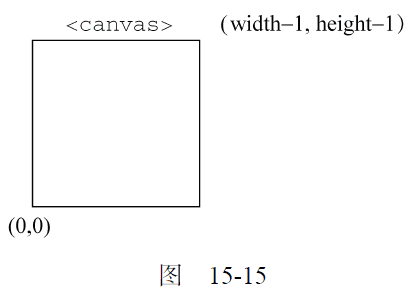
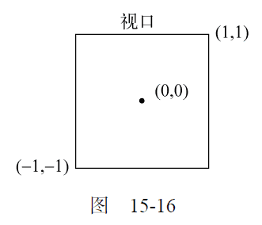
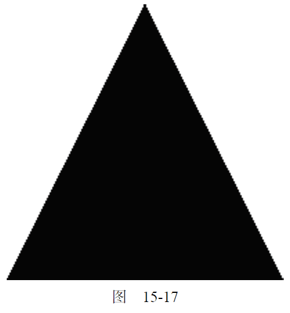
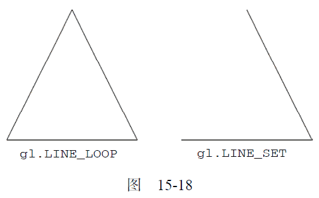

15.3.2 WebGL上下文
目前，在支持的浏览器中，WebGL 的名字叫"experimental-webgl"，这是因为WebGL 规范仍然未制定完成。制定完成后，这个上下文的名字就会变成简单的"webgl"。如果浏览器不支持WebGL，那么取得该上下文时会返回null。在使用WebGL 上下文时，务必先检测一下返回值。
var drawing = document.getElementById("drawing");
//确定浏览器支持<canvas>元素
if (drawing.getContext) {
var gl = drawing.getContext("experimental-webgl");
if (gl) {
//使用WebGL
}
}
运行一下
一般都把WebGL 上下文对象命名为gl。大多数WebGL 应用和示例都遵守这一约定，因为OpenGLES 2.0 规定的方法和值通常都以"gl"开头。这样做也可以保证JavaScript 代码与OpenGL 程序更相近。
取得了WebGL 上下文之后，就可以开始3D 绘图了。如前所述，WebGL 是OpenGL ES 2.0 的Web版，因此本节讨论的概念实际上就是OpenGL 概念在JavaScript 中的实现。
通过给getContext()传递第二个参数，可以为WebGL 上下文设置一些选项。这个参数本身是一个对象，可以包含下列属性。
-
alpha：值为true，表示为上下文创建一个Alpha 通道缓冲区；默认值为true。
-
depth：值为true，表示可以使用16 位深缓冲区；默认值为true。
-
stencil：值为true，表示可以使用8 位模板缓冲区；默认值为false。
-
antialias：值为true，表示将使用默认机制执行抗锯齿操作；默认值为true。
-
premultipliedAlpha：值为true，表示绘图缓冲区有预乘Alpha 值；默认值为true。
-
preserveDrawingBuffer：值为true，表示在绘图完成后保留绘图缓冲区；默认值为false。
建议确实有必要的情况下再开启这个值，因为可能影响性能。传递这个选项对象的方式如下：
var drawing = document.getElementById("drawing");
//确定浏览器支持<canvas>元素
if (drawing.getContext) {
var gl = drawing.getContext("experimental-webgl", {
alpha: false
});
if (gl) {
//使用WebGL
}
}
运行一下
大多数上下文选项只在高级技巧中使用。很多时候，各个选项的默认值就能满足我们的要求。
如果getContext()无法创建WebGL 上下文，有的浏览器会抛出错误。为此，最好把调用封装到个try-catch 块中。
Insert IconMargin[download]
var drawing = document.getElementById("drawing"),
gl;
//确定浏览器支持<canvas>元素
if (drawing.getContext) {
try {
gl = drawing.getContext("experimental-webgl");
} catch(ex) {
//什么也不做
}
if (gl) {
//使用WebGL
} else {
alert("WebGL context could not be created.");
}
}
运行一下
1. 常量
如果你熟悉OpenGL，那肯定会对各种操作中使用非常多的常量印象深刻。这些常量在OpenGL 中都带前缀GL_。在WebGL 中，保存在上下文对象中的这些常量都没有GL_前缀。比如说，GL_COLOR_BUFFER_BIT 常量在WebGL 上下文中就是gl.COLOR_BUFFER_BIT。WebGL 以这种方式支持大多数OpenGL 常量（有一部分常量是不支持的）。
2. 方法命名
OpenGL（以及WebGL）中的很多方法都试图通过名字传达有关数据类型的信息。如果某方法可以接收不同类型及不同数量的参数，看方法名的后缀就可以知道。方法名的后缀会包含参数个数（1 到4）和接收的数据类型（f 表示浮点数，i 表示整数）。例如，gl.uniform4f()意味着要接收4 个浮点数，而gl.uniform3i()则表示要接收3 个整数。
也有很多方法接收数组参数而非一个个单独的参数。这样的方法其名字中会包含字母v（即vector，矢量）。因此，gl.uniform3iv()可以接收一个包含3 个值的整数数组。请大家记住以上命名约定，这样对理解后面关于WebGL 的讨论很有帮助。
3. 准备绘图
在实际操作WebGL 上下文之前，一般都要使用某种实色清除<canvas>，为绘图做好准备。为此，首先必须使用clearColor()方法来指定要使用的颜色值，该方法接收4 个参数：红、绿、蓝和透明度。
每个参数必须是一个0 到1 之间的数值，表示每种分量在最终颜色中的强度。来看下面的例子。
gl.clearColor(0,0,0,1); //black
gl.clear(gl.COLOR_BUFFER_BIT);
运行一下
以上代码把清理颜色缓冲区的值设置为黑色，然后调用了clear()方法，这个方法与OpenGL 中的glClear()等价。传入的参数gl.COLOR_BUFFER_BIT 告诉WebGL 使用之前定义的颜色来填充相应区域。一般来说，都要先清理缓冲区，然后再执行其他绘图操作。
4. 视口与坐标
开始绘图之前，通常要先定义WebGL 的视口（viewport）。默认情况下，视口可以使用整个<canvas>区域。要改变视口大小，可以调用viewport()方法并传入4 个参数：（视口相对于<canvas>元素的）x 坐标、y 坐标、宽度和高度。例如，下面的调用就使用了<canvas>元素：
gl.viewport(0, 0, drawing.width, drawing.height);
视口坐标与我们通常熟悉的网页坐标不一样。视口坐标的原点(0,0)在<canvas>元素的左下角，x轴和y 轴的正方向分别是向右和向上，可以定义为(width-1, height-1)，如图15-15 所示。

知道怎么定义视口大小，就可以只在<canvas>元素的部分区域中绘图。来看下面的例子。
//视口是<canvas>左下角的四分之一区域
gl.viewport(0, 0, drawing.width/2, drawing.height/2);
//视口是<canvas>左上角的四分之一区域
gl.viewport(0, drawing.height/2, drawing.width/2, drawing.height/2);
//视口是<canvas>右下角的四分之一区域
gl.viewport(drawing.width/2, 0, drawing.width/2, drawing.height/2);
另外，视口内部的坐标系与定义视口的坐标系也不一样。在视口内部，坐标原点(0,0)是视口的中心点，因此视口左下角坐标为(-1,-1)，而右上角坐标为(1,1)，如图15-16 所示。

如果在视口内部绘图时使用视口外部的坐标，结果可能会被视口剪切。比如，要绘制的形状有一个顶点在(1,2)，那么该形状在视口右侧的部分会被剪切掉。
5. 缓冲区
顶点信息保存在JavaScript 的类型化数组中，使用之前必须转换到WebGL 的缓冲区。要创建缓冲区，可以调用gl.createBuffer()，然后使用gl.bindBuffer()绑定到WebGL 上下文。这两步做完之后，就可以用数据来填充缓冲区了。例如：
var buffer = gl.createBuffer();
gl.bindBuffer(gl.ARRAY_BUFFER, buffer);
gl.bufferData(gl.ARRAY_BUFFER, new Float32Array([0, 0.5, 1]), gl.STATIC_DRAW);
调用gl.bindBuffer()可以将buffer 设置为上下文的当前缓冲区。此后，所有缓冲区操作都直接在buffer 中执行。因此，调用gl.bufferData()时不需要明确传入buffer 也没有问题。最后一行代码使用Float32Array 中的数据初始化了buffer（一般都是用Float32Array 来保存顶点信息）。如果想使用drawElements()输出缓冲区的内容，也可以传入gl.ELEMENT_ARRAY_BUFFER。gl.bufferData()的最后一个参数用于指定使用缓冲区的方式，取值范围是如下几个常量。
-
gl.STATIC_DRAW：数据只加载一次，在多次绘图中使用。
-
gl.STREAM_DRAW：数据只加载一次，在几次绘图中使用。
-
gl.DYNAMIC_DRAW：数据动态改变，在多次绘图中使用。
如果不是非常有经验的OpenGL 程序员，多数情况下将缓冲区使用方式设置为gl.STATIC_DRAW即可。
在包含缓冲区的页面重载之前，缓冲区始终保留在内存中。如果你不想要某个缓冲区了，可以直接调用gl.deleteBuffer()释放内存：gl.deleteBuffer(buffer);
6. 错误
JavaScript 与WebGL 之间的一个最大的区别在于，WebGL 操作一般不会抛出错误。为了知道是否有错误发生，必须在调用某个可能出错的方法后，手工调用gl.getError()方法。这个方法返回一个表示错误类型的常量。可能的错误常量如下。
-
gl.NO_ERROR：上一次操作没有发生错误（值为0）。
-
gl.INVALID_ENUM：应该给方法传入WebGL 常量，但却传错了参数。
-
gl.INVALID_VALUE：在需要无符号数的地方传入了负值。
-
gl.INVALID_OPERATION：在当前状态下不能完成操作。
-
gl.OUT_OF_MEMORY：没有足够的内存完成操作。
-
gl.CONTEXT_LOST_WEBGL：由于外部事件（如设备断电）干扰丢失了当前WebGL 上下文。
每次调用gl.getError()方法返回一个错误值。第一次调用后，后续对gl.getError()的调用可能会返回另一个错误值。如果发生了多个错误，需要反复调用gl.getError()直至它返回gl.NO_ERROR。在执行了很多操作的情况下，最好通过一个循环来调用getError()，如下所示：
var errorCode = gl.getError();
while(errorCode){
console.log("Error occurred: " + errorCode);
errorCode = gl.getError();
}
如果WebGL 脚本输出不正确，那在脚本中放几行gl.getError()有助于找出问题所在。
7. 着色器
着色器（shader）是OpenGL 中的另一个概念。WebGL 中有两种着色器：顶点着色器和片段（或像素）着色器。顶点着色器用于将3D 顶点转换为需要渲染的2D 点。片段着色器用于准确计算要绘制的每个像素的颜色。WebGL 着色器的独特之处也是其难点在于，它们并不是用JavaScript 写的。这些着色器是使用GLSL（OpenGL Shading Language，OpenGL 着色语言）写的，GLSL 是一种与C 和JavaScript完全不同的语言。
8. 编写着色器
GLSL 是一种类C 语言，专门用于编写OpenGL 着色器。因为WebGL 是OpenGL ES 2.0 的实现，所以OpenGL 中使用的着色器可以直接在WebGL 中使用。这样就方便了将桌面图形应用移植到浏览器中。
每个着色器都有一个main()方法，该方法在绘图期间会重复执行。为着色器传递数据的方式有两种：Attribute 和Uniform。通过Attribute 可以向顶点着色器中传入顶点信息，通过Uniform 可以向任何着色器传入常量值。Attribute 和Uniform 在main()方法外部定义，分别使用关键字attribute 和uniform。在这两个值类型关键字之后，是数据类型和变量名。下面是一个简单的顶点着色器的例子。
//OpenGL 着色语言
//着色器，作者Bartek Drozdz，摘自他的文章
//http://www.netmagazine.com/tutorials/get-started-webgl-draw-square
attribute vec2 aVertexPosition;
void main() {
gl_Position = vec4(aVertexPosition, 0.0, 1.0);
}
运行一下
这个顶点着色器定义了一个名为aVertexPosition 的Attribute，这个Attribute 是一个数组，包含两个元素（数据类型为vec2），表示x 和y 坐标。即使只接收到两个坐标，顶点着色器也必须把一个包含四方面信息的顶点赋值给特殊变量gl_Position。这里的着色器创建了一个新的包含四个元素的数组（vec4），填补缺失的坐标，结果是把2D 坐标转换成了3D 坐标。除了只能通过Uniform传入数据外，片段着色器与顶点着色器类似。以下是片段着色器的例子。
//OpenGL 着色语言
//着色器，作者Bartek Drozdz，摘自他的文章
//http://www.netmagazine.com/tutorials/get-started-webgl-draw-square
uniform vec4 uColor;
void main() {
gl_FragColor = uColor;
}
运行一下
片段着色器必须返回一个值，赋给变量gl_FragColor，表示绘图时使用的颜色。这个着色器定义了一个包含四方面信息（vec4）的统一的颜色uColor。从以上代码看，这个着色器除了把传入的值赋给gl_FragColor 什么也没做。uColor 的值在这个着色器内部不能改变。
OpenGL 着色语言比这里看到的还要复杂。专门讲解这门语言的书有很多，本节只是从辅助使用WebGL 的角度简要介绍一下该语言。
要了解更多信息，请参考RandiJ. Rost 编著的OpenGL Shading Language（Addison-Wesley,2006）。
9. 编写着色器程序
浏览器不能理解GLSL 程序，因此必须准备好字符串形式的GLSL 程序，以便编译并链接到着色器程序。为便于使用，通常是把着色器包含在页面的<script>标签内，并为该标签指定一个自定义的type属性。由于无法识别type 属性值，浏览器不会解析<script>标签中的内容，但这不影响你读写其中的代码。例如：
<script type="x-webgl/x-vertex-shader" id="vertexShader">
attribute vec2 aVertexPosition;
void main() {
gl_Position = vec4(aVertexPosition, 0.0, 1.0);
}
</script>
<script type="x-webgl/x-fragment-shader" id="fragmentShader">
uniform vec4 uColor;
void main() {
gl_FragColor = uColor;
}
</script>
运行一下
然后，可以通过text 属性提取出<script>元素的内容：
var vertexGlsl = document.getElementById("vertexShader").text,
fragmentGlsl = document.getElementById("fragmentShader").text;
复杂一些的WebGL 应用可能会通过Ajax（详见第21 章）动态加载着色器。而使用着色器的关键是要有字符串形式的GLSL 程序。
取得了GLSL 字符串之后，接下来就是创建着色器对象。要创建着色器对象，可以调用gl.create-Shader()方法并传入要创建的着色器类型（gl.VERTEX_SHADER 或gl.FRAGMENT_SHADER）。编译着色器使用的是gl.compileShader()。请看下面的例子。
var vertexShader = gl.createShader(gl.VERTEX_SHADER);
gl.shaderSource(vertexShader, vertexGlsl);
gl.compileShader(vertexShader);
var fragmentShader = gl.createShader(gl.FRAGMENT_SHADER);
gl.shaderSource(fragmentShader, fragmentGlsl);
gl.compileShader(fragmentShader);
运行一下
以上代码创建了两个着色器，并将它们分别保存在vertexShader 和fragmentShader 中。而使用下列代码，可以把这两个对象链接到着色器程序中。
var program = gl.createProgram();
gl.attachShader(program, vertexShader);
gl.attachShader(program, fragmentShader);
gl.linkProgram(program);
运行一下
第一行代码创建了程序，然后调用attachShader()方法又包含了两个着色器。最后调用gl.link-Program()则把两个着色器封装到了变量program 中。链接完程序之后，就可以通过gl.useProgram()方法通知WebGL 使用这个程序了。
gl.useProgram(program);
调用gl.useProgram()方法后，所有后续的绘图操作都将使用这个程序。
10. 为着色器传入值
前面定义的着色器都必须接收一个值才能工作。为了给着色器传入这个值，必须先找到要接收这个值的变量。对于Uniform变量，可以使用gl.getUniformLocation()，这个方法返回一个对象，表示Uniform变量在内存中的位置。然后可以基于变量的位置来赋值。例如：
var uColor = gl.getUniformLocation(program, "uColor");
gl.uniform4fv(uColor, [0, 0, 0, 1]);
运行一下
第一行代码从program 中找到Uniform变量uColor，返回了它在内存中的位置。第二行代码使用gl.uniform4fv()给uColor 赋值。
对于顶点着色器中的Attribute 变量，也是差不多的赋值过程。要找到Attribute 变量在内存中的位置，可以调用gl.getAttribLocation()。取得了位置之后，就可以像下面这样赋值了：
var aVertexPosition = gl.getAttribLocation(program, "aVertexPosition");
gl.enableVertexAttribArray(aVertexPosition);
gl.vertexAttribPointer(aVertexPosition, itemSize, gl.FLOAT, false, 0, 0);
运行一下
在此，我们取得了aVertexPosition 的位置，然后又通过gl.enableVertexAttribArray()启用它。最后一行创建了指针， 指向由gl.bindBuffer() 指定的缓冲区， 并将其保存在aVertexPosition 中，以便顶点着色器使用。
11. 调试着色器和程序
与WebGL 中的其他操作一样，着色器操作也可能会失败，而且也是静默失败。如果你想知道着色器或程序执行中是否发生了错误，必须亲自询问WebGL 上下文。
对于着色器，可以在操作之后调用gl.getShaderParameter()，取得着色器的编译状态：
if (!gl.getShaderParameter(vertexShader, gl.COMPILE_STATUS)){
alert(gl.getShaderInfoLog(vertexShader));
}
运行一下
这个例子检测了vertexShader 的编译状态。如果着色器编译成功，调用gl.getShader-Parameter()会返回true。如果返回的是false，说明编译期间发生了错误，此时调用gl.getShader-InfoLog()并传入相应的着色器就可以取得错误消息。错误消息就是一个表示问题所在的字符串。无论是顶点着色器，还是片段着色器，都可以使用gl.getShaderParameter()和gl.getShaderInfoLog()方法。
程序也可能会执行失败，因此也有类似的方法——gl.getProgramParameter()，可以用来检测执行状态。最常见的程序失败发生在链接过程中，要检测链接错误，可以使用下列代码。
if (!gl.getProgramParameter(program, gl.LINK_STATUS)){
alert(gl.getProgramInfoLog(program));
}
运行一下
与gl.getShaderParameter()类似，gl.getProgramParameter()返回true 表示链接成功，返回false 表示链接失败。同样，也有一个gl.getProgramInfoLog()方法，用于捕获程序失败的消息。
以上介绍的这些方法主要在开发过程中用于调试。只要没有依赖外部代码，就可以放心地把它们从产品代码中删除。
12. 绘图
WebGL 只能绘制三种形状：点、线和三角。其他所有形状都是由这三种基本形状合成之后，再绘制到三维空间中的。执行绘图操作要调用gl.drawArrays()或gl.drawElements()方法，前者用于数组缓冲区，后者用于元素数组缓冲区。
gl.drawArrays()或gl.drawElements()的第一个参数都是一个常量，表示要绘制的形状。可取值的常量范围包括以下这些。
-
gl.POINTS：将每个顶点当成一个点来绘制。
-
gl.LINES：将数组当成一系列顶点，在这些顶点间画线。每个顶点既是起点也是终点，因此数组中必须包含偶数个顶点才能完成绘制。
-
gl.LINE_LOOP：将数组当成一系列顶点，在这些顶点间画线。线条从第一个顶点到第二个顶点，再从第二个顶点到第三个顶点，依此类推，直至最后一个顶点。然后再从最后一个顶点到第一个顶点画一条线。结果就是一个形状的轮廓。
-
gl.LINE_STRIP：除了不画最后一个顶点与第一个顶点之间的线之外，其他与gl.LINE_LOOP相同。
-
gl.TRIANGLES：将数组当成一系列顶点，在这些顶点间绘制三角形。除非明确指定，每个三角形都单独绘制，不与其他三角形共享顶点。
-
gl.TRIANGLES_STRIP：除了将前三个顶点之后的顶点当作第三个顶点与前两个顶点共同构成一个新三角形外，其他都与gl.TRIANGLES 相同。例如，如果数组中包含A、B、C、D 四个顶点，则第一个三角形连接ABC，而第二个三角形连接BCD。
-
gl. TRIANGLES_FAN：除了将前三个顶点之后的顶点当作第三个顶点与前一个顶点及第一个顶点共同构成一个新三角形外，其他都与gl.TRIANGLES 相同。例如，如果数组中包含A、B、C、D 四个顶点，则第一个三角形连接ABC，而第二个三角形连接ACD。
gl.drawArrays()方法接收上面列出的常量中的一个作为第一个参数，接收数组缓冲区中的起始索引作为第二个参数，接收数组缓冲区中包含的顶点数（点的集合数）作为第三个参数。下面的代码使用gl.drawArrays()在画布上绘制了一个三角形。
//假设已经使用本节前面定义的着色器清除了视口
//定义三个顶点以及每个顶点的x 和y 坐标
var vertices = new Float32Array([ 0, 1, 1, -1, -1, -1 ]),
buffer = gl.createBuffer(),
vertexSetSize = 2,
vertexSetCount = vertices.length/vertexSetSize,
uColor, aVertexPosition;
//把数据放到缓冲区
gl.bindBuffer(gl.ARRAY_BUFFER, buffer);
gl.bufferData(gl.ARRAY_BUFFER, vertices, gl.STATIC_DRAW);
//为片段着色器传入颜色值
uColor = gl.getUniformLocation(program, "uColor");
gl.uniform4fv(uColor, [ 0, 0, 0, 1 ]);
//为着色器传入顶点信息
aVertexPosition = gl.getAttribLocation(program, "aVertexPosition");
gl.enableVertexAttribArray(aVertexPosition);
gl.vertexAttribPointer(aVertexPosition, vertexSetSize, gl.FLOAT, false, 0, 0);
//绘制三角形
gl.drawArrays(gl.TRIANGLES, 0, vertexSetCount);
运行一下
这个例子定义了一个Float32Array，包含三组顶点（每个顶点由两点表示）。这里关键是要知道顶点的大小及数量，以便将来计算时使用。把vertexSetSize 设置为2 之后，就可以计算出vertexSetCount 的值。把顶点的信息保存在缓冲区中后，又把颜色信息传给了片段着色器。
接下来，给顶点着色器传入顶点大小以及gl.FLOAT，后者表示顶点坐标是浮点数。传入的第四个参数是一个布尔值，false 在此表示坐标不是标准化的。第五个参数是步长值（stride value），表示取得下一个值的时候，要跳过多少个数组元素。除非你真需要跳过数组元素，否则传入0 即可。最后一个参数是起点偏移量，值为0 表示从第一个元素开始。
最后一步就是使用gl.drawArrays()绘制三角形。传入gl.TRIANGLES 作为第一个参数，表示在(0,1)、(1,-1)和(-1,-1)点之间绘制三角形，并使用传给片段着色器的颜色来填充它。第二个参数是缓冲区中的起点偏移量，最后一个参数是要读取的顶点总数。这次绘图操作的结果如图15-17 所示。

通过修改gl.drawArrays()的第一个参数，可以修改绘制三角形的方式。图15-18 展示了传入不同的参数后可能得到的结果。

13. 纹理
WebGL 的纹理可以使用DOM中的图像。要创建一个新纹理，可以调用gl.createTexture()，然后再将一幅图像绑定到该纹理。如果图像尚未加载到内存中，可能需要创建一个Image 对象的实例，以便动态加载图像。图像加载完成之前，纹理不会初始化，因此，必须在load 事件触发后才能设置纹理。例如：
var image = new Image(),
texture;
image.src = "smile.gif";
image.onload = function() {
texture = gl.createTexture();
gl.bindTexture(gl.TEXTURE_2D, texture);
gl.pixelStorei(gl.UNPACK_FLIP_Y_WEBGL, true);
gl.texImage2D(gl.TEXTURE_2D, 0, gl.RGBA, gl.RGBA, gl.UNSIGNED_BYTE, image);
gl.texParameteri(gl.TEXTURE_2D, gl.TEXTURE_MAG_FILTER, gl.NEAREST);
gl.texParameteri(gl.TEXTURE_2D, gl.TEXTURE_MIN_FILTER, gl.NEAREST);
//清除当前纹理
gl.bindTexture(gl.TEXTURE_2D, null);
}
除了使用DOM中的图像之外，以上步骤与在OpenGL 中创建纹理的步骤相同。最大的差异是使用gl.pixelStore1()设置像素存储格式。gl.UNPACK_FLIP_Y_WEBGL 是WebGL 独有的常量，在加载Web 中的图像时，多数情况下都必须使用这个常量。这主要是因为GIF、JPEG 和PNG 图像与WebGL使用的坐标系不一样，如果没有这个标志，解析图像时就会发生混乱。
用作纹理的图像必须与包含页面来自同一个域，或者是保存在启用了CORS（Cross-Origin ResourceSharing，跨域资源共享）的服务器上。第21 章将讨论CORS。
图像、加载到<video>元素中的视频，甚至其他<canvas>元素都可以用作纹理。跨域资源限制同样适用于视频。
14. 读取像素
与2D 上下文 类似，通过WebGL 上下文也能读取像素值。读取像素值的方法readPixels()与OpenGL 中的同名方法只有一点不同，即最后一个参数必须是类型化数组。像素信息是从帧缓冲区读取gl.LINE_LOOP gl.LINE_SET的，然后保存在类型化数组中。readPixels()方法的参数有：x、y、宽度、高度、图像格式、数据类
型和类型化数组。前4 个参数指定读取哪个区域中的像素。图像格式参数几乎总是gl.RGBA。数据类型参数用于指定保存在类型化数组中的数据的类型，但有以下限制。
-
如果类型是gl.UNSIGNED_BYTE，则类型化数组必须是Uint8Array。
-
如果类型是gl.UNSIGNED_SHORT_5_6_5、gl.UNSIGNED_SHORT_4_4_4_4 或gl.UNSIGNED_SHORT_5_5_5_1，则类型化数组必须是Uint16Array。
下面是一个简单的例子。
var pixels = new Uint8Array(25*25);
gl.readPixels(0, 0, 25, 25, gl.RGBA, gl.UNSIGNED_BYTE, pixels);
以上代码从帧缓冲区中读取了25×25 像素的区域，将读取到的像素信息保存到了pixels 数组中。
其中，每个像素的颜色由4 个数组元素表示，分别代表红、绿、蓝和透明度。每个数组元素的值介于0到255 之间（包含0 和255）。不要忘了根据返回的数据大小初始化类型化数组。
在浏览器绘制更新的WebGL 图像之前调用readPixels()不会有什么意外。绘制发生后，帧缓冲区会恢复其原始的干净状态，而调用readPixels()返回的像素数据反映的就是清除缓冲区后的状态。
如果你想在绘制发生后读取像素数据， 那在初始化WebGL 上下文时必须传入适当的preserveDrawingBuffer 选项（前面讨论过）。
var gl = drawing.getContext("experimental-webgl", { preserveDrawingBuffer: true; });
设置这个标志的意思是让帧缓冲区在下一次绘制之前，保留其最后的状态。这个选项会导致性能损失，因此能不用最好不要用。